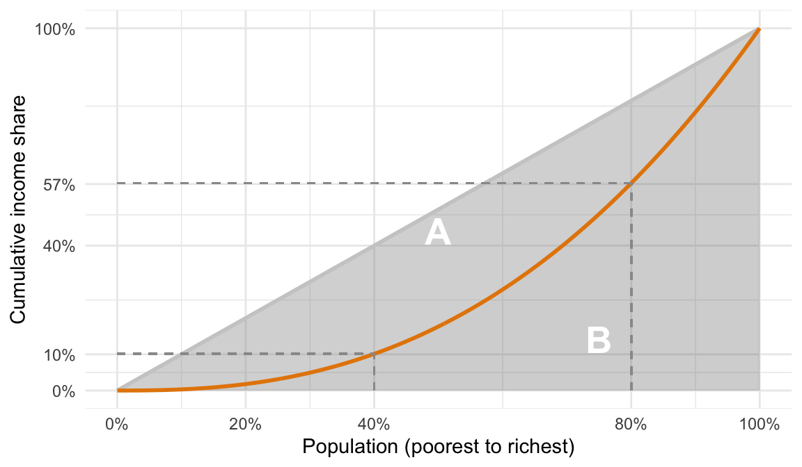
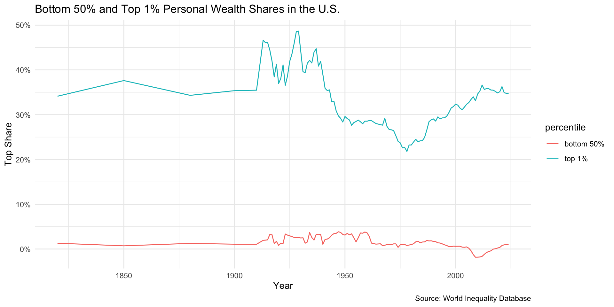
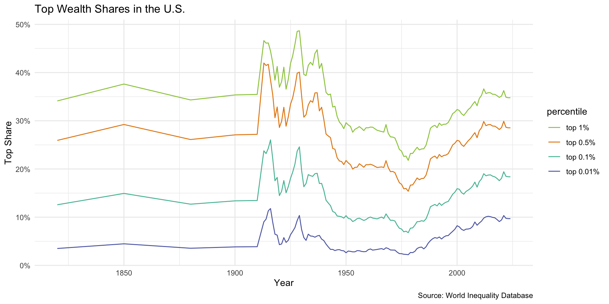
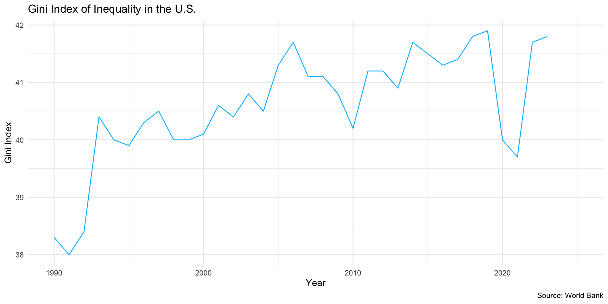
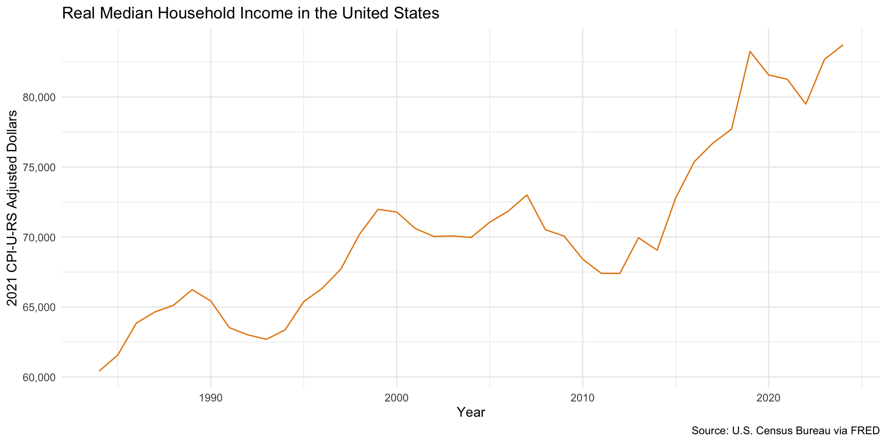
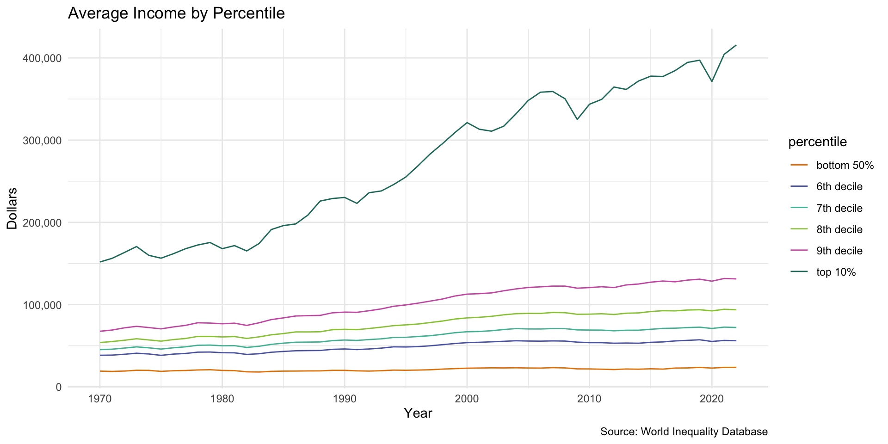

Lecture 13.2
Globalization
Inequality
Illustrative statistics from Stiglitz
- 20% of wage earners earn as much as bottom 80%
- Top 1% earn in a week what bottom 20% earns in a year
- Top .1% earn in a day what bottom 90% earns in a year
- Walton family controls as much wealth as is owned by bottom 30% of society (~$238 billion)
Measures We Will Use
- Income/wealth shares — what fraction of total income/wealth a group captures
- Gini coefficient — summarizes the whole distribution (0 = perfect equality, 1 = perfect inequality)
- Median household income — measures living standards at the middle; useful for tracking whether the middle is keeping up
Lorenz Curve and Gini Coefficient
The diagonal is the line of equality — every X% of the population earns Y% of income. The bowed curve is the Lorenz curve (the actual distribution). Gini = A/(A+B): ranges from 0 (perfect equality) to 1 (perfect inequality).
The diagonal line represents perfect equality — every x% of the population earns x% of income. The Lorenz curve shows the actual distribution, bowed below the line of equality. Region A is the gap between the two; region B is the area under the Lorenz curve. The Gini coefficient is A/(A+B): the larger A is relative to the total triangle, the more unequal the distribution. It ranges from 0 (perfect equality) to 1 (perfect inequality).
Income vs. Wealth Inequality
- Income: what people earn from work and returns from investments like stocks, bonds and investment properties
- Wealth: value of everything a person or family owns minus any debts
- Net worth: marketable assets minus debts
- Financial wealth: non-home wealth
Wealth Inequality
The Problem of the 1%

Decomposing the 1%

Top 1% as a whole see increased wealth shares of about 15% from 1975 to now, while top .5% doubles its wealth share; .1% and .01% tripple their wealth shares.
Piketty: Why Wealth Concentrates
- Thomas Piketty’s central argument: r > g
- r = rate of return on capital (dividends, interest, rent, capital gains)
- g = rate of economic growth
- When r > g, those who own wealth accumulate faster than the economy grows
- Historical averages: r ≈ 4–5%, g ≈ 1–2% over the long run
The Mechanism
- Owners of capital reinvest returns → wealth compounds over time
- Workers depend on wage growth, which roughly tracks g
- Over time, capital’s share of total income rises relative to labor’s share
- Inherited wealth comes to dominate over earned income
- Piketty: “the past devours the future”
Exercise: Testing Piketty
- Go to wid.world → Country graphs → Wealth inequality
- Select a country: Canada, United Kingdom, Germany, France, Sweden, China, or India
- Look at top wealth shares over time and discuss:
- Has wealth concentrated at the top in your country?
- Does the trend fit Piketty’s prediction — slow, steady concentration driven by capital returns?
- Or does the pattern look different? What might explain that?
Limitations of r > g
- Predicts slow, gradual concentration — but U.S. inequality rose sharply after ~1980
- Most Americans have little non-home wealth to compound, so r > g doesn’t help them
- Better at explaining wealth concentration than income inequality
- We need a different theory for that
Income Inequality
United States Gini Coefficient

United States Median Household Income

United States Average Incomes

Stiglitz: Rent-Seeking and Market Power
- Joseph Stiglitz argues inequality stems from rent-seeking
- Economic rent = income earned by capturing value rather than creating it
- Monopoly pricing, financial speculation, control over intellectual property
- Key insight: market rules are not natural — they are shaped by those with power
- Who benefits from deregulation? From weak antitrust enforcement?
Market Power and Worker Wages
- Monopsony: when employers dominate local labor markets, they can suppress wages
- Workers paid less than the value they produce
- Non-compete clauses trap workers and reduce their bargaining power
- Fissured workplace: outsourcing, franchising, and gig economy shift risk onto workers
- Concentrated industries (healthcare, tech, retail) → lower wages for workers
Executive Pay vs. Worker Pay
- CEO pay has grown ~940% since 1978; typical worker pay ~12%
- Executives sit on each other’s boards → mutual back-scratching on compensation
- Shareholder primacy shifts gains to executives and shareholders at workers’ expense
- Stock buybacks and options concentrate rewards at the very top
- This is Stiglitz’s core target: inequality within firms, not just between them
Stiglitz’s Remedies
- Revive antitrust enforcement — break up existing monopolies, block anticompetitive mergers
- Broaden the standard — move beyond consumer prices to consider worker welfare, innovation, and market structure
- Regulate platforms — prevent companies from competing on their own marketplace (Amazon selling against third-party sellers)
- Reform corporate governance — give workers a seat at the table; rein in executive pay
- Reduce political influence of corporations — money in politics perpetuates the rules that allow rent-seeking
Debate: Fixing Market Power
- Pick one of the major tech platforms: Meta, Amazon, Apple, Google, or Microsoft
- Stiglitz proposes several remedies — which would you apply to your company, and why?
- Break it up?
- Regulate it as a platform?
- Reform its governance?
- Something else?
- Who wins and who loses from your proposed remedy?
Lina Khan and the New Antitrust
“Anti-monopoly is a governing philosophy that broadly views concentrations of power as a threat to freedom, recognizing that tyranny comes in many guises. Just as the Constitution creates checks and balances in our government, safeguarding against concentrated political control, anti-monopoly laws create checks against concentrations of economic power.”
— Lina Khan, former FTC Chair (2021–2025)
- Khan argued the consumer welfare standard, antitrust’s focus on keeping prices low, is blind to how platforms accumulate and abuse market power
- How does Khan’s argument follow from Stiglitz? Should we think of concentrated economic power as a threat to freedom?
Conclusion
The Bigger Picture
- Piketty and Stiglitz give us two complementary mechanisms:
- Wealth inequality: capital compounds faster than economies grow → the wealthy pull away
- Income inequality: market power suppresses wages and inflates executive pay → workers fall behind
- Neither theory alone is sufficient because inequality is overdetermined
- Multiple forces reinforced each other from the 1980s onward
- Inequality is not an accident of markets
- It reflects the rules of the game, and rules can be changed
Other Forces Worth Noting
These factors amplified the Piketty/Stiglitz dynamics rather than replacing them:
- Economic globalization — trade competition suppressed wages in exposed sectors; financialization expanded returns to capital (Piketty)
- The Reagan revolution — deregulation, removal of capital controls, and cuts to top marginal tax rates weakened redistribution and widened the gap between r and g (both)
- Technology and skill change — reduced demand for low-skilled workers, increased returns to education (Stiglitz)
- Decline of unions and left parties — eroded worker bargaining power, accelerating wage stagnation (Stiglitz)
- Weakening redistribution — lower minimum wages and a thinner safety net allowed market inequality to translate more directly into living standards